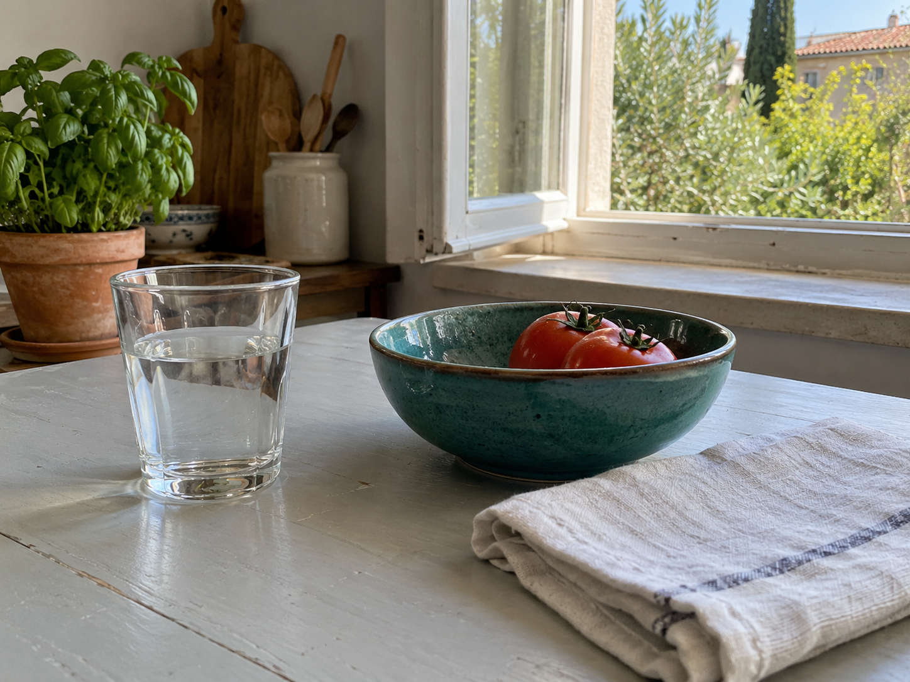
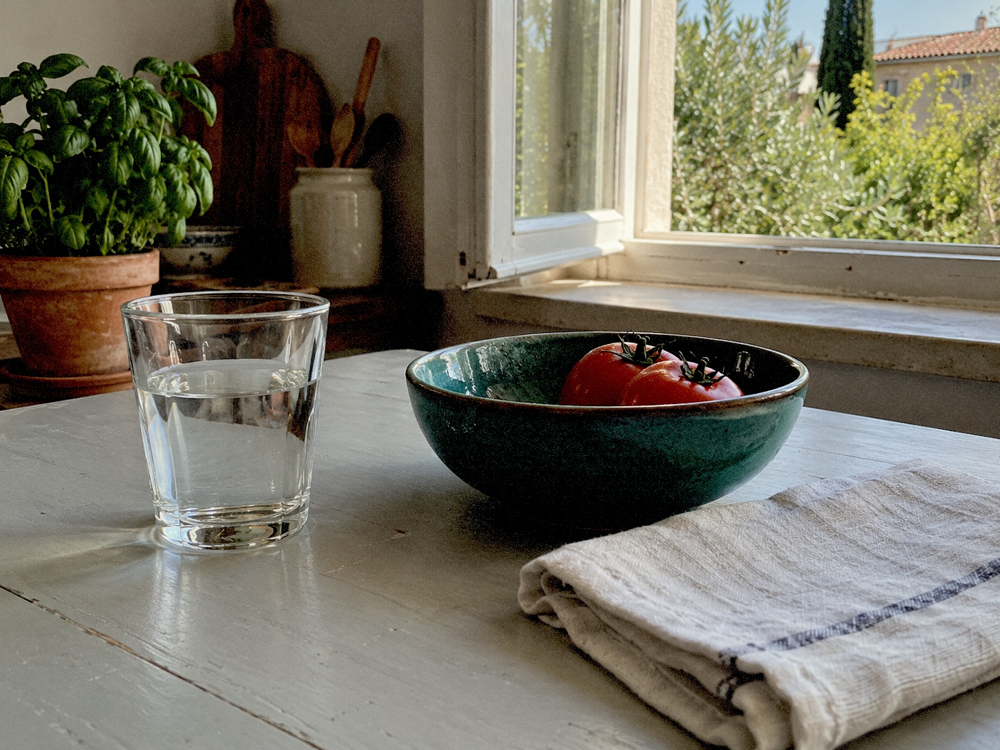
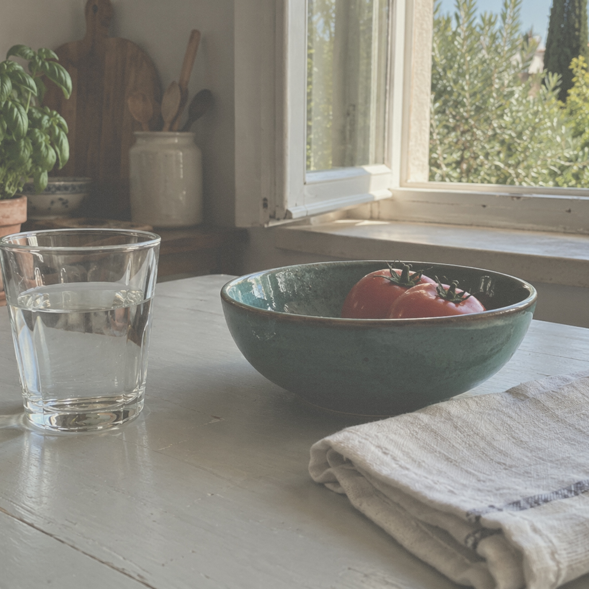
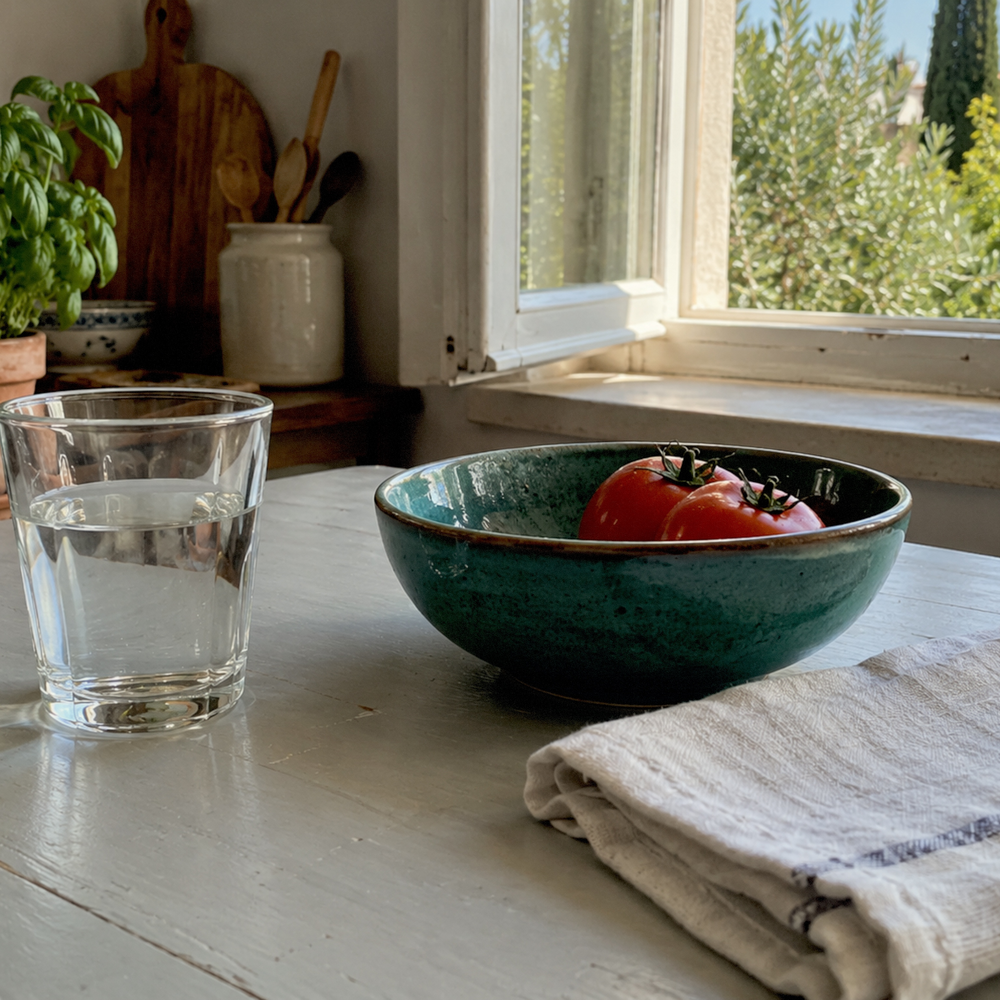

Generated source, untreatedOpen source
Not a real iPhone capture. The full source stays visible for crop and tonal comparison.


Disposable / native developed draftOpen result
Fixed seed 2026100100. No manual grading or post-render changes.

Three Photo Cameras
One source, fixed seeds, current native presets. Square outputs retain the renderer's center crop; no decorative frame was added for this review.
More contrast, visible grain. Roll-level reveal.


Softer, square print. Individual reveal.


Square framing, restrained grain. Roll-level reveal.
Window Light
An original draft instrumental: plucked melody, light arpeggios and soft bass. No sampled recording, microphone or voice. No named-artist reference.
96 BPM / eight bars / 22 seconds / 48 kHz mono PCM. Movie examples use the opening eight seconds. Human listening and production-rights review are still outstanding.
Review Boundaries
- Render identity
film-look-1-provisional. Existing application renderer, fixed review seeds. Photo dimensions and Movie cadence are proposals, not newly approved choices.- Movie comparison
- Super 8: 200-second Film capacity, provisional 18 fps. 16mm: 165-second Film capacity, provisional 24 fps. Both previews are eight seconds, H.264 at 1920 x 1440, landscape locked. The portrait second clip receives side borders.
- Source limitation
- The moving source is a digitally animated pan of the generated still. It cannot validate real motion fidelity, camera mirroring, stabilization, low light, skin tones or hardware capture.
- Rights status
- Draft preparation only. DEC-05 must separately record applicable source terms, ownership, attribution, in-app bundling and user-Movie export rights. No invented production license or approval.
- Next review
- Assess distinctness and tonal response, then select representative real-phone scenes and approve final render/asset specifications. Soundtrack choice and reselection remain the existing product decision.
Decoded native metadata and hashes Source-to-output inventory